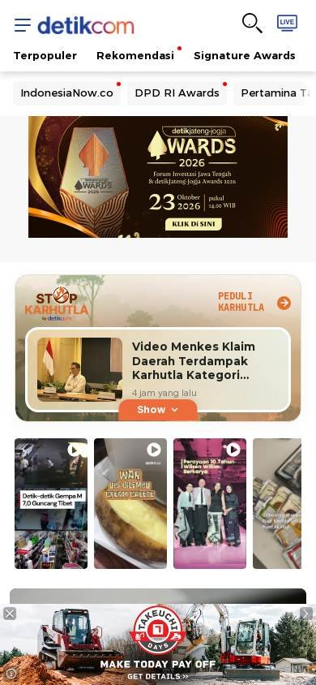
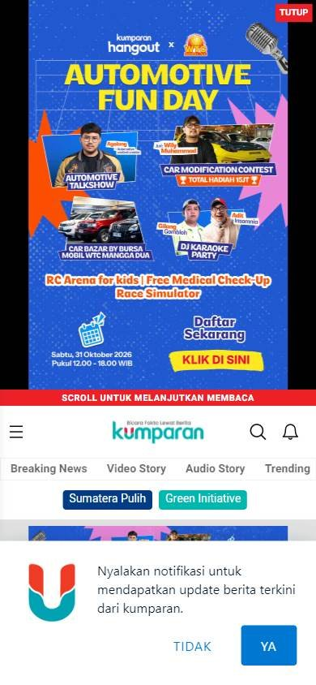

Sitio informativo o de noticias
Los seleccionados
Los tres sitios más visitados de Indonesia, según estadísticas de tráfico.
En resumen: lo que hacen los líderes
La pantalla de inicio de cada uno


Estilo visual
Colores, imágenes, tipografía y cuánta información muestran.
Tu estilo visual debería…
- Paleta acotada en la interfaz; si hay publicidad, que no tape el contenido principal.
Lo que tienen en común: Paleta de marca acotada en la interfaz, pero mucha publicidad colorida que la vuelve más cargada.
La paleta de cada uno
Medida sobre la primera pantalla. Los colores de marca salen del header; el resto muestra cuánto espacio ocupa cada color.
Así lo resuelve cada uno
Ficha comparativa
| Aspecto | Detik | Kumparan | Kompas |
|---|---|---|---|
| Paleta | Acotada: azul + blanco | Variada: verde azulado + muchos colores de banners | Acotada: negro + azul + blanco |
| Imágenes | Fotos medianas | Fotos medianas en círculos y banners | Fotos medianas |
| Densidad | Media | Alta | Muy alta |
Header
La franja de arriba con el logo y los accesos.
Tu header debería…
- Botones de cuenta o suscripción visibles en el header.
Lo que tienen en común: Logo grande y botones de cuenta o suscripción visibles.
Así lo resuelve cada uno


Ficha comparativa
| Aspecto | Detik | Kumparan | Kompas |
|---|---|---|---|
| Fondo | Blanco | Blanco | Negro |
| Logo | Azul, centrado y grande | Verde azulado, a la izquierda | Blanco y azul, a la izquierda |
| Botones | «Daftar» y «Masuk» | «Masuk» y «Buat Tulisan» | Botón azul de suscripción |
Menú y categorías
Cómo se organizan las secciones.
Tu menú y categorías debería…
- Fila de secciones sobre franja de color de la marca.
Lo que tienen en común: Secciones en fila sobre una franja de color, o con círculos de temas con imagen.
Así lo resuelve cada uno

Ficha comparativa
| Aspecto | Detik | Kumparan | Kompas |
|---|---|---|---|
| Formato | Fila de canales sobre franja azul | Fila de secciones + círculos de temas | Fila de secciones sobre negro |
Primera pantalla
Lo primero que se ve debajo del header.
Tu primera pantalla debería…
- Noticia principal con foto grande; si vendés publicidad, ubicala a los costados.
Lo que tienen en común: Muchos banners de eventos y publicidad antes de las noticias.
Así lo resuelve cada uno
Ficha comparativa
| Aspecto | Detik | Kumparan | Kompas |
|---|---|---|---|
| Formato | Banner de evento + fila de fotos | Banner promocional + noticia con foto grande | Publicidad + titulares en columnas |
| Publicidad | Sí | Sí, a los costados | Sí, mucha |